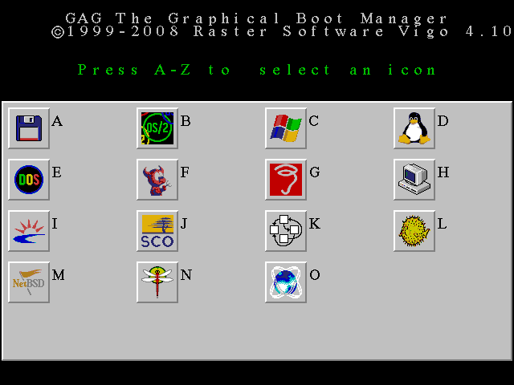

When GAG starts for first time, it will show the main menu. There are only two icons: boot from floppy and Setup. Below each description is the key you have to press to select that action.
If you press S (Setup, but the key can be different if you choose a language different than English), GAG will show the Setup Menu, with these options:

You can choose an option just pressing the colored key.
The first option allows to add to GAG's menu an operating system installed on one of your hard disks. When you choose it, GAG shows a list with all the partitions in your first hard disk. The primary partitions are showed in black, and the extended partitions in blue.
In the upper example we see that the first hard disk contains two primary partitions, which type is 83 in hexadecimal (Linux EXT2/EXT3), and two extended partitions, one with type 82h (Linux Swap) and another one with type 83h again.
But these are only the first hard disk's partitions. To see the partitions in the second hard disk you must press the key '2'. To see the partitions in the third hard disk, just press the key '3', and so on.
Now you have to choose the partition that contains the operating system that you want to add, just by pressing the corresponding letter.
If you choose a partition from the second, third... hard disk, GAG will ask you if you want to swap the disk drives. But if the partition is in the first hard disk, you will not see this question.
If you answer YES, each time you boot with that icon a small resident program will be installed, which will swap that drive and the first hard disk, so the operating system will think that the second (or third...) hard disk is the first (C:) and the first is the second (or third...) (D:). This allows you to boot operating systems such as MS-DOS from the second, third... disk, and not only from the first.
WARNING: this resident driver will use up 1 KByte of conventional memory. The resident program works at BIOS level, so it will not work with operating systems that use specific drivers to access the hard disk. Anyway, it can be needed to boot operating systems like Windows XP/Vista when they are installed in the second, third... hard disks.
The resident program is installed even if you choose the option Boot from floppy from a hard disk different than the first. This allows you to create an icon that boots from floppy with the hard disks swapped, allowing you to install that operating systems in theses drives directly, without unmounting or physically disconecting them.
Now you should type a short description (up to 15 characters) for the Operating system. As an example: Linux, OS/2, Windows...
Then, you can add a password to protect the operating system. This password must be typed each time you want to boot this operating system. If you just press here RETURN, no password will be required.
Finally, you choose the icon you want for that O.S. just by pressing a letter from A to Z (A for the first icon, B for the second...)

Repeat this for each Operating System you have on your hard disk.
This option deletes the entry of an operating system from GAG. When you press D, GAG will show you the configured operating systems. Press a number from 1 to 9 to delete it from the boot menu. But WARNING: this option DOES NOT DELETE the operating system from the hard disk; it only deletes it from the GAG list, you can add it again. To delete an O.S. you have to use FDISK, some other partition manager, or just format or wipe the partition or drive where installed.
If you don't want to delete an O.S. (you pressed the wrong key), you can press ESC to return.
This option allows us to select the time in seconds that GAG must wait before booting the default O.S. The maximum is 99 seconds. If we have the timer enabled and want to disable it, just press RETURN or type 0.
The boot timer will be disabled if you delete the default O.S.
After typing the number of seconds, GAG will show you the list of installed operating systems. You have to select the one you want to boot after the timer expires.
With this option GAG will require a password to enter in the Setup menu. This is usefull when GAG is instaled in a 'public' computer.
When this option is active (marked with a '1' or '2', see the red circle in the next picture), GAG 4.11 will hide all primary partitions '2' on the boot drive except the one that is booting, or '1' only those before the partition that is booting. This avoids DOS/Windows system from interfering with another DOS/Windows installed in the same disk.
When this option is inactive, GAG 4.11 will hide no primary partitions, In testing with WIN NT 4.0 sp6 on the first primary partition, MSDOS 6.22 on the second primary partition, and Win98 SE on the third primary partition all OS booted with no problems withotu hiding any paretitions. The system this was tested on has Athlon 900 Mhz single core processor. This behavior is new in GAG 4.11.
Another feature inprovement in GAG 4.11 is all partitions are unhidden on all physical drives other than the one being booted to. This guarantees that if last boot up hd0 for example was booted, then this time hd1, or hd2, ... is being booted any partitions that were hidden on hd0 last boot up are now unhidden.
Let's see it with an example: imagine that we have five partitions: three primary ones (1 to 3) and two extended (4 and 5). If this option is active '2' and you boot the Operating system installed in partition 2, GAG 4.11 will hide partitions 1 and 3 (partitions 4 and 5, being extended, will be always visible). But if this option is '1' and you boot from partition 2, GAG 4.11 will hide only partition 1, and partition 3 will remain visible. Or if this option is inactive GAG 4.11 hides no partitions and both partitions 1 and 3 will remain visible.
With this option you return to the main menu (to select an OS to boot).
With this option GAG and the actual configuration is saved on a floppy. This allows testing GAG without installing it on the hard disk.
Remember that you must use this option (or the next one) each time you change your configuration (when you add or delete an operating system, or when you change the timer or the password) to store the changes.
This option allow us to save GAG and the actual configuration in your hard disk's MBR, so it will be loaded every time we turn on the computer. Since GAG is bigger than 512 bytes, only a small loader is saved in the MBR, and GAG itself is stored in the first 62 sectors of the first track, which are reserved for this kind of programs. But this has some small problems:
I strongly recommend to test GAG first from a floppy, and only if it works correctly, install it on the Hard Disk.
WARNING: each time you change the options or the list of O.S. to boot, or the timer or configuration password, you must use the SAVE IN FLOPPY or SAVE IN HARD DISK options to store the changes; otherwise they will not be saved.
SafeBoot is a GAG's feature that allows to boot your hard disk always. If there is an error when GAG is loading, just reset your computer and hold down the SHIFT, ALT or CNTRL key. Instead of loading GAG, the MBR code will load the last operating system used, so you can reinstall GAG or fix the error.
To avoid a 'security hole', SafeBoot is disabled if there is an entry with password. This is because SafeBoot doesn't use passwords, so a malicious person can use it to jump over them. But if you have password only for the Setup option, but not for booting the operating systems, SafeBoot will be available.
Remember that you can have a floppy disk with GAG installed and configured for your hard disk, so you can use it as a rescue disk if some problem occurs.
When GAG boots, it makes some tests. If it finds an error, it shows an error-number on the screen and halts the system. The errors are theses:
BAD SECTOR: there was a read error when trying to load GAG. If you were booting from floppy, reinstall it on another floppy without bad sectors. If you were booting from hard disk, use SafeBoot to boot an operating system and reinstall GAG. If the error is still present, you have bad sectors on your hard disk.
ACTIVE PARTITION NOT FOUND: this error occurs only with SafeBoot. There is no one partition marked as active (this is, marked as C:). Just boot with a floppy, use FDISK, or any other partition manager, to mark one and reset.
GAG NOT FOUND: the code loaded from the floppy or the hard disk dose not have the GAG signature. It is possible that the first track has been overwriten. Use SafeBoot and reinstall GAG.
NO BOOT SECTOR: this error can occurr only with SafeBoot. The active partition does not contain a valid operating system. Reboot with a floppy, use FDISK to mark another partition as active and reboot.
If you want to use GAG with MS-DOS or Windows 95/98, you don't need to do anything special, because they can be installed only in primary partitions.
If you want to use GAG with OS/2, it is possible that, during the O.S. installation, you must install the OS/2 Boot Manager too (this ocurrs when you install OS/2 in an extended partition and/or in the second, third... hard disk). Don't worry. Continue the instalation and, after it ends, install GAG. But there is a little problem: when OS/2 is installed in an extended partition, GAG can't boot it directly. You must install the OS/2 Boot Manager, and boot it from GAG. To prevent the Boot Manager's menu from being displayed, you can set its timer to zero seconds. But if you want to boot OS/2 from a primary partition of the second, or third... hard disk, you only have to answer YES to the 'Exchange drive letters' option, you don't need to use the IBM Boot Manager.
If you want to use GAG with Windows NT/2000/XP/Vista, you have to install its Boot Manager, NTLDR, in the same partition as the O.S., but you can put its timer to 0 seconds.
If you want to use GAG with Linux, you only need to install LILO or GRUB in the Boot Sector of the partition where the kernel is.
If you have different Linux-kernels in different partitions, you will have to put a different LILO or GRUB on each partition, possibly setting the LILO/GRUB timer to 0.
Of course, GAG can be used with all other operating systems too, such AIX, FreeBSD, BeOS...
When the timer is active, a decrementing orange bar is shown at the top of the screen. If you press a key, the timer is stopped. If you press RETURN, the default operating system is booted.
WARNING: if the BIOS virus protection is enabled, you can get false alarms each time you boot a new O.S. This is because to hide partitions, GAG (and all Boot Managers) must change a bit in the partition entry, in the MBR, thus rewrite the MBR